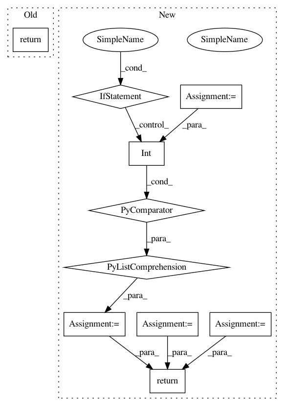

50f9caba54a250607938b91b6564a76d0157a53f,tensorflow_encrypted/convert/register.py,,maxpool,#Any#Any#Any#,172
Before Change
input = converter.outputs[inputs[0]]
return tf.nn.max_pool(input, list(node.attr["ksize"].list.i),
list(node.attr["strides"].list.i),
node.attr["padding"].s)
def shape(converter: Converter, node: Any, inputs: List[str]) -> Any:
input = converter.outputs[inputs[0]]
After Change
ksize = node.attr["ksize"].list.i
s = node.attr["strides"].list.i
padding = node.attr["padding"].s.decode("ascii")
pool_size = [ksize[1], ksize[2]]
strides = [s[1], s[2]]
shape = [int(i) for i in input.shape]
channels_first = node.attr["data_format"].s.decode("ascii") == "NCHW"
max = MaxPooling2D(shape, pool_size, strides, padding, channels_first)
out = max.forward(input)
return out
def shape(converter: Converter, node: Any, inputs: List[str]) -> Any:
input = converter.outputs[inputs[0]]
In pattern: SUPERPATTERN
Frequency: 3
Non-data size: 10
Instances
Project Name: mortendahl/tf-encrypted
Commit Name: 50f9caba54a250607938b91b6564a76d0157a53f
Time: 2018-10-16
Author: yann.dupis@gmail.com
File Name: tensorflow_encrypted/convert/register.py
Class Name:
Method Name: maxpool
Project Name: tensorflow/transform
Commit Name: 687e31d276db17b4ac7bea08b01c1e5401168ca9
Time: 2019-01-23
Author: tf-transform-dev@google.com
File Name: tensorflow_transform/tf_metadata/metadata_io.py
Class Name:
Method Name: _column_schema_from_json
Project Name: dask/distributed
Commit Name: 6efd5b6147d29ec613bd83c72cdbd6a5a45a1438
Time: 2020-10-06
Author: jacobtomlinson@users.noreply.github.com
File Name: distributed/diagnostics/nvml.py
Class Name:
Method Name: _pynvml_handles